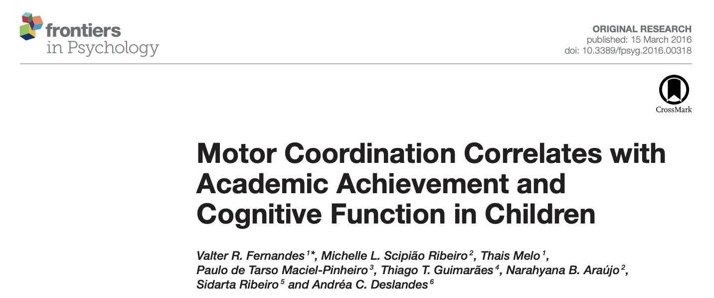
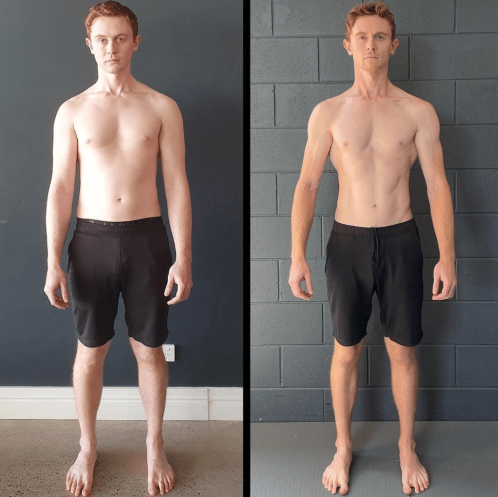

In the spectrum of educational methods, modern systems have distinctly favoured visual and auditory learning, sidelining an essential component of human intelligence and understanding - the kinesthetic aspect. In fact, I struggled to find any research articles about KQ, with the research favouring various other types of intelligence. Kinesthetic Intelligence, or KQ, represents the wisdom of the body, an evolutionary, biological knowledge deeply rooted in movement, physical interaction, and the sensory feedback derived from these experiences.
Part 1: The Underestimated Power of KQ:
Historically, kinesthetic learning was crucial for survival and skill acquisition, especially in primitive societies. It was through movement and physical trial and error that early humans learned to adapt, innovate, and thrive. In contemporary times, our education system's clinical nature undermines this innate human potential. The transition from an active, engaging learning process to a static one limits opportunities and stifles the growth of students who might flourish through physical movement and experimentation.
Part 2: The Consequences of KQ Neglect in Modern Education:
Our classrooms, characterised by stillness with students anchored to their seats, reflect a silent crisis. This environment neglects the importance of bodily movement in cognitive development and perpetuates the false notion that physical skills spontaneously emerge without the need for education or refinement. Such assumptions overlook the truth that, like literacy, kinesthetic aptitude requires nurturing. The absence of kinesthetic education impacts more than our physical abilities; it diminishes our capacity to interpret social cues, navigate personal relationships, and develop intuitive insights, integral to personal and professional success.
The implications of disconnecting from our inherent kinesthetic intelligence are profound, extending beyond physical well-being. Recent scholarly insights provide compelling evidence on the cognitive symbiosis between the body and mind, underscoring the need to re-evaluate our educational and health paradigms.
Groundbreaking research delineates the multifaceted benefits of regular physical activity, illustrating enhancements not only in obvious health markers - such as cardiorespiratory health, bone density, and chronic disease mitigation (Garber et al., 2011) - but also in nuanced cognitive functionalities that are pivotal for both academic and life performance. These encompass critical aspects such as motor coordination, agility, and executive functions (EFs) like planning, working memory, and cognitive flexibility (Diamond, 2013).
Notably, motor skills, often side-lined in traditional educational curricula, are integral to cognitive and academic achievements. Studies indicate a robust correlation between motor skills and executive functions, which are central to academic success (Van der Fels et al., 2015; Grissmer et al., 2010). This synergy suggests that early motor development not only necessitates but also enriches cognitive capacities, later reflecting throughout academic and professional life.

Moreover, physical exercise, a catalyst for physical and metabolic health, is also a potent enhancer of cognitive functions. Activities necessitating high degrees of coordination, agility, and motor skills activate neural circuits linking cognitive domains with physical execution. Such exercises contribute to improvements in a range of executive functions critical for academic and everyday performance (Budde et al., 2008; Crova et al., 2013).
Insights from neuroimaging reveal an intricate interplay between regions traditionally associated with either cognition (like the prefrontal cortex) or movement (such as the cerebellum and basal ganglia) (Diamond, 2000). This neurological crosstalk during specific cognitive or motor tasks underscores the artificial bifurcation between 'physical' and 'mental' activities, a division deeply ingrained in modern education systems.
Physical activity not only fosters synaptogenesis and neurogenesis but also enhances cerebral blood volume and neurotransmitter balance, promoting cognitive health and function (Pereira et al., 2007; Chaddock et al., 2010; Dishman et al., 2006). These physiological responses, especially prominent in the hippocampus and prefrontal cortex, are instrumental for learning, memory consolidation, and the nuanced orchestration of executive functions (Davis et al., 2011).
In light of these findings, the importance of re-integrating kinesthetic intelligence into our educational practices becomes paramount. A curriculum that promotes physical activity, particularly types necessitating coordination, agility, and complex motor tasks, could be instrumental in nurturing these cognitive faculties. Such an approach does not merely aim at preventing health issues associated with a sedentary lifestyle. Instead, it recognises and leverages the symbiotic relationship between movement and cognitive development, acknowledging their co-dependence for a healthier, more harmonious human experience.Furthermore, the misunderstanding of kinesthetic intelligence extends beyond the classroom, infiltrating our lifestyle and, crucially, our approach to physical health. In the realm of fitness, especially, there is a glaring discrepancy between common exercise practices and activities that genuinely resonate with our evolutionary needs.
A post shared by Functional Patterns Brisbane (@fp_brisbane)
Let’s look at the example of our client Matthew, a 14-year-old grappling with the physical and psychological impacts of Scheuermann’s kyphosis, a condition that notably affected his T10-11-12 vertebrae. This deviation from the norm was not just a structural anomaly; it had cascading effects on his posture, confidence, and, implicitly, his interaction with the world.
Matthew’s journey underscores the transformative power of kinesthetic engagement. Initially, his condition predisposed him to a slouched posture, a physical manifestation that could metaphorically reflect the burdens modern educational pressures exert on students. However, targeted kinesthetic intervention gradually began to work wonders.
Over six months of specialised training aimed at enhancing his bodily intelligence, Matthew experienced significant improvements:
Improved knee and hip flexion: Facilitating more efficient movement and reducing the strain on his joints.
Enhanced arm drive: Allowing for a better balance and coordination that reflects in daily activities and sports.
Optimised myofascial force transmission: This led to less jarring in the lumbo-pelvic region, reducing discomfort and potential long-term musculoskeletal issues.
Increased hip and thoracic extension: Crucial for more powerful and efficient push-off phases during movement, thereby improving overall mobility.
These physical improvements were not the sole victories. The nuanced, yet profound shift in Matthew's self-perception is the real triumph. With an upright posture came a newfound confidence, a "swag in his step," that was conspicuously absent before. This transformation is a testament to the intrinsic link between our physical selves and our psychological states.
Matthew’s case is a microcosm of the broader implications of re-integrating kinesthetic intelligence into our developmental frameworks. It's not about isolated physicalimprovements; it's about holistic well-being. When we address bodily intelligence, we're nurturing the ground for self-esteem, confidence, and the courage required to navigate the world.
TRAINING FOR THE SAKE OF IT: POOR QUALITY MOVEMENT DIMINISHES YOUR KQ
“I’ve been doing FP at FP Brisbane for about 2 years now, and it has transformed my body in ways I hadn’t been able to achieve doing other things (Olympic lifting, regular gym schedule, cycling, etc). The biggest improvement I’ve felt, personally, is the massive reduction in lower back pain, almost completely gone; sometimes I don’t even think about it anymore.”
This revelation is particularly striking when contrasted with conventional fitness regimes. Today's prevalent physical activities - be it Olympic lifting, long gym hours, or even cycling - are often non-conducive to our natural bodily movements. They sometimes exacerbate discomfort or yield negligible positive transformation, primarily because they do not harmonise with the evolutionary design of our bodies. Our ancestors did not lift weights in repetitive motions or cycle in a stationary position. They engaged in diverse physical activities involving various muscle groups, often in integrated, complex movements that contributed to a holistic physical wellbeing.
This dissonance highlights a crucial aspect: modern-day versions of 'staying active' can inadvertently diminish our Kinesthetic Quotient (KQ). We've drifted into valuing exercise solely for aesthetic or competitive accomplishments, overlooking the importance of functional movement that aligns with our body's innate intelligence and evolutionary history.
By engaging in practices that respect our evolutionary past, as the individual in the testimonial did with Functional Patterns, people can rediscover and nurture their kinesthetic intelligence. This approach not only potentially alleviates chronic ailments but also reconnects individuals with a more harmonious way of physical being, one that contemporary lifestyles have unfortunately distorted or outright neglected.
Trent's story also serves as a testament to the transformative power of embracing kinesthetic learning. Before engaging with Functional Patterns (FP), Trent struggled with knee and back pain, which impeded his work and daily life. However, through FP, a system that emphasises biomechanically efficient movement patterns, Trent reaped the benefits of enhanced kinesthetic intelligence. He shares:
“Before starting with FP, I would experience a lot of pain in my knees and lower back from doing my job and participating in other physical activities. Nowadays, however, I am pain-free and can complete my work more efficiently. I am also more selective in the types of activities I engage in. My breathing has also dramatically improved as before, I found the compression in my ribcage and chest region restricted my ability to breathe in. FP has helped me improve my ability to breathe, and I have done a lot of work on reducing the compression in my ribcage. In conclusion, I would say that FP has helped me to move pain-free both in my work and in everyday life.”
Trent's experience highlights the broader implications of kinesthetic neglect in our educational and societal structures. It's not just about physical health; it's about overall well-being, efficiency in daily tasks, and quality of life.

Part 3: Kinesthetic Learning in Cultural Context
The marginalisation of kinesthetic learning isn't merely an educational oversight; it's a cultural shortcoming. Students with a proclivity for kinesthetic learning often find themselves sidelined, misunderstood, or, worse, labelled as 'learning disabled.' Our culture has confined the expression and recognition of kinesthetic intelligence to narrow fields like athletics, performing arts, or rehabilitation - a segregation that carries detrimental assumptions and undervalues a rich variety of intelligence.
Part 4: Reimagining Education with KQ
Reviving kinesthetic learning necessitates a foundational shift in our educational approach. This reform means creating inclusive spaces for movement, incorporating physical activity into the learning process, and acknowledging kinesthetic intelligence as a legitimate and critical form of intelligence. This holistic framework won't just benefit kinesthetic learners; it will provide a multifaceted, vibrant learning environment for all students, preparing them with a more comprehensive set of skills for their diverse futures.
By introducing real-life scenarios where individuals felt a significant improvement in their quality of life through methods that embrace our natural movement patterns, the argument for re-evaluating and adapting modern fitness and educational practices becomes stronger. It underscores the necessity for a paradigm shift towards approaches that respect our intrinsic physicality, promoting not just education reform but a societal transformation concerning health and well-being.
The essence of kinesthetic intelligence in cultivating deep 'understanding' or 'kin', as eloquently portrayed in The Education of Little Tree, is undeniable. It's imperative not to let this profound element of human intelligence get eclipsed in our quest for academic advancement. Let this be a clarion call to educators, parents, and policymakers to champion an educational renaissance that celebrates and cultivates kinesthetic intelligence, steering us towards a society that is inclusively intelligent, empathetic, and 'kin' in every sense.